LaTeX Math Symbols
Prepared by L. Kocbach, on the basis of this document (origin: David Carlisle, Manchester University)
File A.tex contains all necessary code
Greek Letters
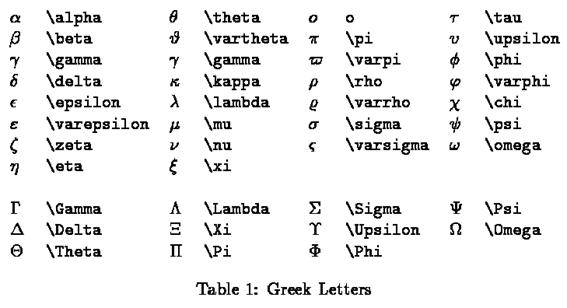
Binary Operation Symbols
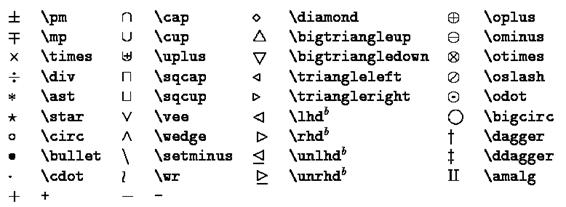
Relation Symbols
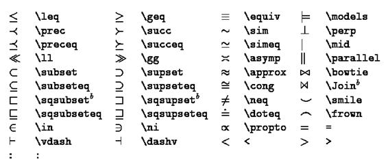
Punctuation Symbols
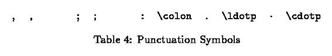
Arrow Symbols
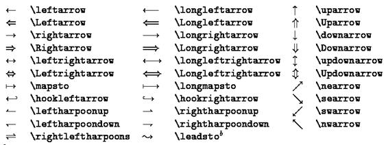
Miscellaneous Symbols
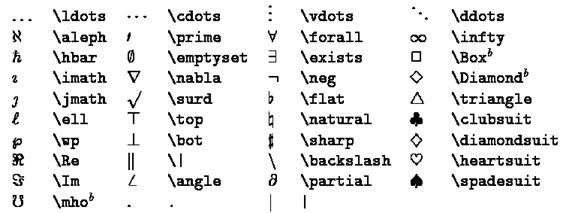
Variable-sized Symbols
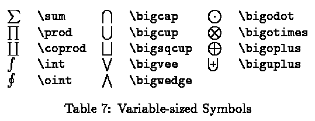
Log-like Symbols
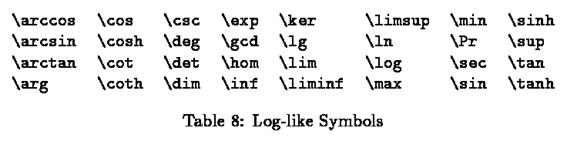
Delimiters
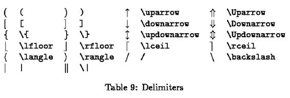
Large Delimiters
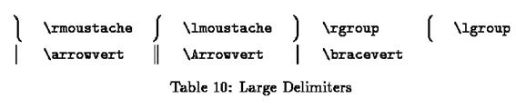
Math mode accents
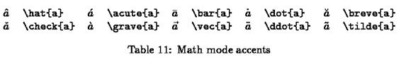
Some other constructions
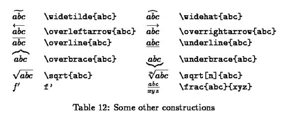
Created with the Personal Edition of HelpNDoc: Easily create iPhone documentation